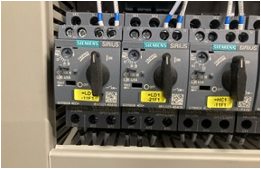
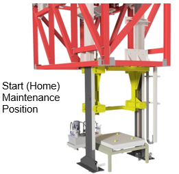
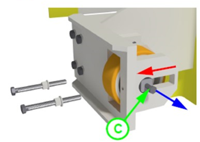

Replacing the Vulkolian Wheels on the Vertical Carriage
SBS-MR-026F
Revised: 2023-06-30
Purpose/Application
Defines the procedures for replacing the Vulkolian wheels on the vertical carriage of the lifting station.
PPE Required
General
Bump cap, safety glasses, hearing protection, long sleeves, safety-toed shoes.
Respirator or PAPR in case of a toxic batch material spill
Safety Hazards
Respirable Crystalline Silica

Safety Controls
- The Hazard Communication Standard (HCS) requires chemicals to have Safety Data Sheets (SDS), please refer to the SDS for chemicals listed in this SOP for additional hazards, first aid measures, toxicological information, accidental release measures, and handling/storage of the chemical.
- Review the Emergency Action Plan before performing work.
Equipment Needed
- Access to the MSK control panel
- Fire extinguisher in the cage
Comments
- Read a section thoroughly before starting the work. Personnel performing the tasks in this document must have completed the required training.
- For additional information, refer to:
- SBS-ET-026 Troubleshooting the Lifting Station
- SBS-OP-026 Operating the Lifting Station
- Vendor manuals in the Resources library
Safety Information Before Performing Maintenance
|
DANGER:
Danger of electric shock! Contact with live components poses a risk of serious injury or even death!
|
|
|
DANGER:
Life threatening hazard due to a falling vertical carriage! The unsecured vertical carriage can fall down and cause serious injury or even death!
|
|
|
Warning:
Danger of injury from improperly performed maintenance! Improper maintenance can result in serious personal injury or material damage!
|
|
|
Warning:
Risk of injury from stored pneumatic energy! Pneumatic energy may be stored in the machine that can lead to uncontrolled movements of components and injuries!
|
|
|
Warning:
Danger of crushing! There are several crushing points on the machine that can cause injuries!
|
|
|
Warning:
Danger due to non-observance of the prohibition of transporting persons! The MSK transfer system can pose a serious risk in the event of non-compliance and/or circumvention of the prohibition of trans- porting persons.
|
|
|
Warning:
Risk of injury due to stored hydraulic energy! Hydraulic energy can be stored in the machine and cause the un-controlled movement of components, which can lead to severe in- juries!
|
|
|
Warning:
Risk of injury due to laser radiation! Laser radiation can cause serious eye damage.
|
|
|
CAUTION:
Danger of electric shock! Parts of the machine may still be live even when the emergency stop switch has been pressed!
|
Stopping and Restarting the Lifting Station
-
CAUTION:
In an emergency, or if there is a risk of injury or damage to property or the environment, either
- Stop the lifting station at the control panel by pressing the Start/Stop button.
- Press the E-Stop for the lifting station. This will also stop all SBS operations, including the pneumatic sender.
Note:When the E-Stop button is pressed, all movements of the lifting station are stopped, and pneumatic cylinders end their stroke after reaching the end position.
Note:Frequent emergency stops result in high mechanical loads and increased wear.

-
Note:Follow these steps to enter the fenced area:
The gate in the safety fence is equipped with a safety limit switch. When the gate is opened, an E-Stop occurs that stops the lifting station and the rest of SBS.
- Inform the operating personnel and the batch supervisor that maintenance is being performed.
- Stop the lifting station at the MSK control panel by pressing the Start/Stop button.
- In the MSK control cabinet in the control room, trip the 3 circuit breakers.
- Remove the circuit breakers.
- Lockout-tagout-verify the power per plant requirements.
- At the safety fence door, press the Request Door Open button.
- When the light turns green, open the gate. Then close it after entering.
- Press the Door Reset (blue) button.


-
After completing the maintenance work
- Make sure that the equipment can operate properly.
- Verify that all safety components are in place.
- When leaving the fenced area, press the Door Reset button.
- Remove LOTO, and re-install the 3 circuit breakers in the MSK control cabinet.
- At the control panel, cancel all faults by pressing the Reset Fault button on the control panel.
- Also, press the Reset Safety Fence Area button.
- Ensure that no personnel are near the equipment, or in the safety fence area.
- Press the Start button on the control panel.
- Observe the operation to ensure that the lifting station is working properly.
CAUTION:There is a serious danger for anyone inside the safety fence area when the lifting station is turned on.
Using Safety Bolts on the Vertical Carriage
-
Note:
Always make sure that the safety bolts for the vertical carriage are properly installed before working on or near the carriage.
- The vertical carriage has safety bolts on both sides of the carriage to prevent it from dropping during maintenance.
- Insert both safety bolts into the corresponding bores on the vertical carriage lifting mast, and fasten the fixing plate.
DANGER:An unsecured vertical carriage can fall down and cause serious injury or even death.


-
There are three maintenance positions for the vertical carriage (yellow component
in the images)
- Lower Maintenance Position (top image) Use this position to safely perform most tasks on the vertical carriage, such as adjusting the guide wheels.
- Upper Maintenance Position (middle image) Use this position for working on the vertical movement.
- Start (Home) Maintenance Position (bottom image) The system returns to this position after each working cycle to wait for the AGV and batch container.
To move the vertical carriage into one of the maintenance positions:- Verify that no personnel are in the safety fence area.
- Wait for the machine to finish its cycle.
- At the MSK contro l panel, switch the unit to “Manual mode.” (For details, see SBS-OP-026 Operating the Lifting Station.)
- Select the manual function “Lift all up (to top)” or “Lift all down (to bottom).”
- Move the vertical carriage up or down as needed by pressing the “Start/Stop Automatic” button on the MSK control panel.
- Move the vertical carriage until the bores on the lifting mast and on the carriage overlap.



-
When the vertical carriage is at the desired position:
- Follow the instructions in Section 2 above to lockout-tagout-verify the power to the lifting station is off.
- Enter the safety fence area.
- Insert both safety bolts into the corresponding bores on the vertical carriage lifting mast and fasten the fixing plate.
- Remember to remove the safety bolts when the work is complete.
DANGER:An unsecured vertical carriage can fall down and cause serious injury or even death.
Replacing the Vulkolian Wheels on the Vertical Carriage
-
Move the vertical carriage into the lower maintenance position.
- Follow the instructions in Section 3 to position the vertical carriage.
- Follow the instruction in Section 2 above to lockout-tagout-verify the power to the lifting station is off.
- Enter the safety fence area.
-
Insert both safety bolts into the corresponding bores on the vertical carriage
lifting mast and fasten the fixing plate.
- Always make sure that the safety bolts for the vertical carriage are properly installed before carrying out work on or near the carriage.
DANGER:An unsecured vertical carriage can fall down and cause serious injury or even death.
-
Remove all guide wheels for the vertical carriage in the following manner
- Loosen the lock nuts (A).
- Twist and remove the adjusting screws (B).
- Insert a screw (C) into the threaded hold at the end of the axis.
- Push the wheel in the direction of the cylindrical cut-out (see red arrow).
- Hold the wheel and pull out the axis with the help of the inserted bolt in the direction of the blue arrow.
- The wheel and the bearings can now be removed from the assembly.


Approval
|
Person |
Role |
|---|---|
|
Johnathan Fisher |
SBS Manager – R&D |
|
Phillip Wilson |
EHS Continuous Improvement Manager |
|
Jeremy Singletary |
Shift Leader, Research & Development |
Revision History
| 2023-06-30 |
Approved by Johnathan Fisher, SBS Manager – R&D |
|
Original Issue |